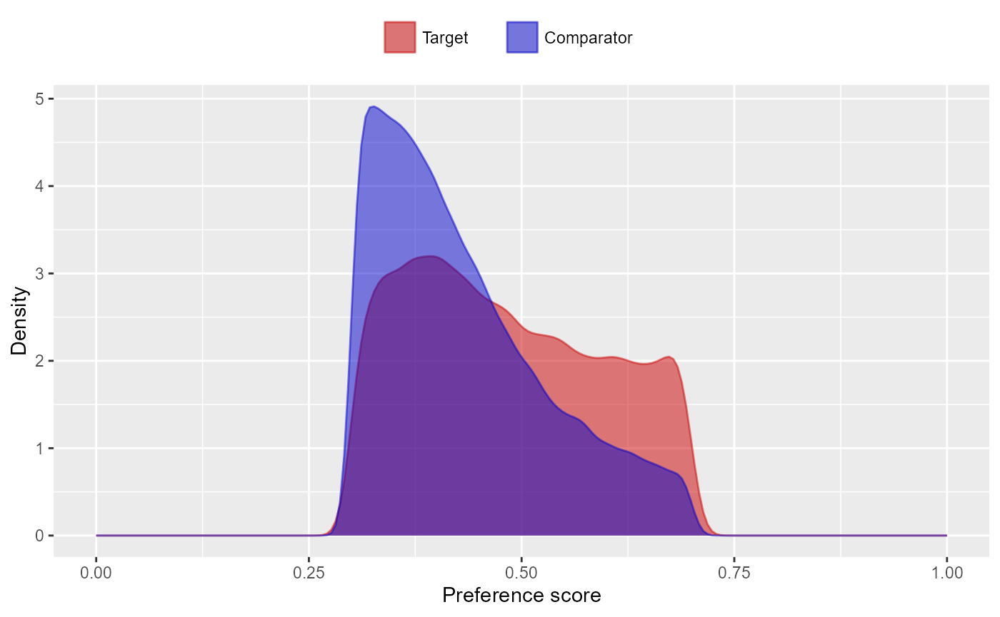
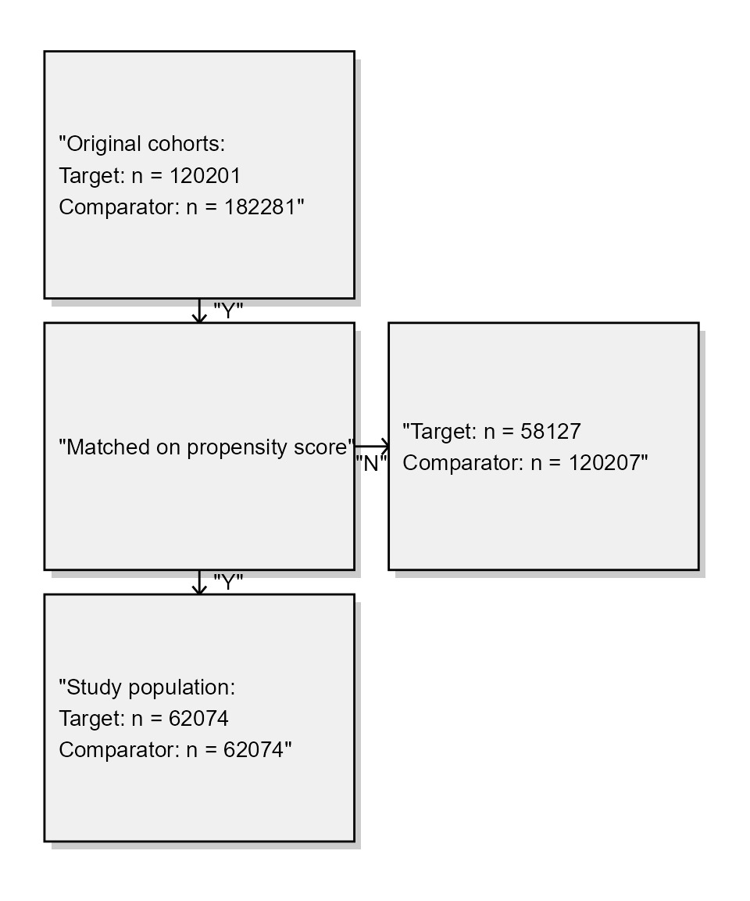
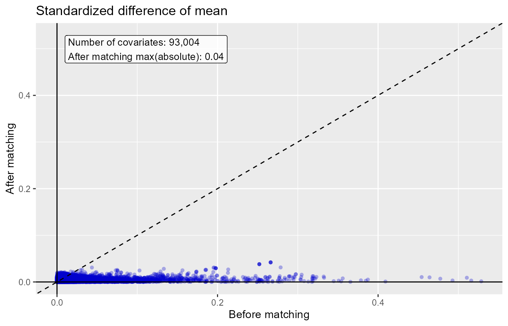
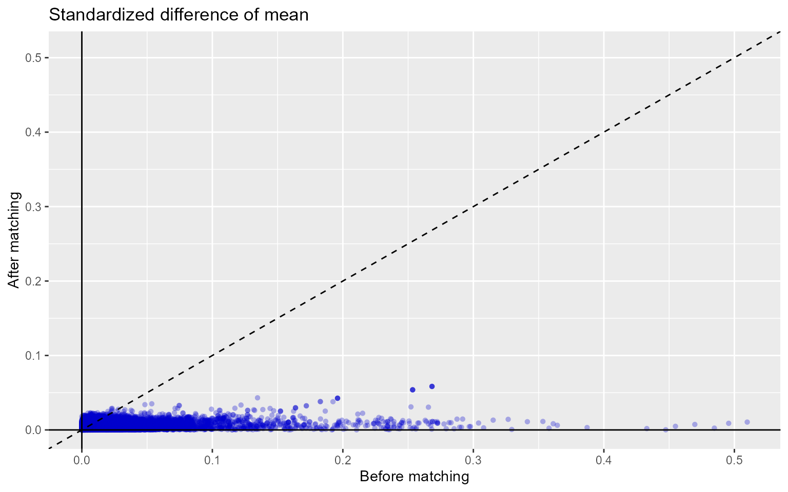
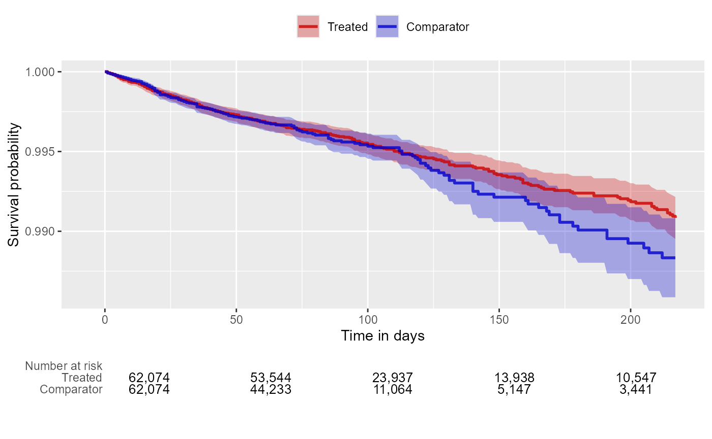

Single studies using the CohortMethod package
Martijn J. Schuemie, Marc A. Suchard and Patrick Ryan
2024-02-01
Source:vignettes/SingleStudies.Rmd
SingleStudies.RmdIntroduction
This vignette describes how you can use the CohortMethod
package to perform a single new-user cohort study. We will walk through
all the steps needed to perform an exemplar study, and we have selected
the well-studied topic of the effect of coxibs versus non-selective
non-steroidal anti-inflammatory drugs (NSAIDs) on gastrointestinal (GI)
bleeding-related hospitalization. For simplicity, we focus on one coxib
– celecoxib – and one non-selective NSAID – diclofenac.
Installation instructions
Before installing the CohortMethod package make sure you
have Java available. For Windows users, RTools is also necessary. See these instructions
for properly configuring your R environment.
The CohortMethod package is currently maintained in a Github repository, and
has dependencies on other packages in Github. All of these packages can
be downloaded and installed from within R using the drat
package:
install.packages("remotes")
remotes::install_github("ohdsi/CohortMethod")Once installed, you can type library(CohortMethod) to
load the package.
Data extraction
The first step in running the CohortMethod is extracting
all necessary data from the database server holding the data in the
Observational Medical Outcomes Partnership (OMOP) Common Data Model
(CDM) format.
Configuring the connection to the server
We need to tell R how to connect to the server where the data are.
CohortMethod uses the DatabaseConnector
package, which provides the createConnectionDetails
function. Type ?createConnectionDetails for the specific
settings required for the various database management systems (DBMS).
For example, one might connect to a PostgreSQL database using this
code:
connectionDetails <- createConnectionDetails(dbms = "postgresql",
server = "localhost/ohdsi",
user = "joe",
password = "supersecret")
cdmDatabaseSchema <- "my_cdm_data"
cohortDatabaseSchema <- "my_results"
cohortTable <- "my_cohorts"
options(sqlRenderTempEmulationSchema = NULL)The last few lines define the cdmDatabaseSchema,
cohortDatabaseSchema, and cohortTable
variables. We’ll use these later to tell R where the data in CDM format
live, and where we want to write intermediate tables. Note that for
Microsoft SQL Server, databaseschemas need to specify both the database
and the schema, so for example
cdmDatabaseSchema <- "my_cdm_data.dbo". For database
platforms that do not support temp tables, such as Oracle, it is also
necessary to provide a schema where the user has write access that can
be used to emulate temp tables. PostgreSQL supports temp tables, so we
can set options(sqlRenderTempEmulationSchema = NULL) (or
not set the sqlRenderTempEmulationSchema at all.)
Preparing the exposures and outcome(s)
We need to define the exposures and outcomes for our study. Here, we
will define our exposures using the OHDSI Capr package. We
define two cohorts, one for celecoxib and one for diclofenac. For each
cohort we require a prior diagnosis of ‘osteoarthritis of knee’, and 365
days of continuous prior observation. we restrict to the first exposure
per person:
library(Capr)
osteoArthritisOfKneeConceptId <- 4079750
celecoxibConceptId <- 1118084
diclofenacConceptId <- 1124300
osteoArthritisOfKnee <- cs(
descendants(osteoArthritisOfKneeConceptId),
name = "Osteoarthritis of knee"
)
attrition = attrition(
"prior osteoarthritis of knee" = withAll(
atLeast(1, conditionOccurrence(osteoArthritisOfKnee), duringInterval(eventStarts(-Inf, 0)))
)
)
celecoxib <- cs(
descendants(celecoxibConceptId),
name = "Celecoxib"
)
diclofenac <- cs(
descendants(diclofenacConceptId),
name = "Diclofenac"
)
celecoxibCohort <- cohort(
entry = entry(
drugExposure(celecoxib, firstOccurrence()),
observationWindow = continuousObservation(priorDays = 365)
),
attrition = attrition,
exit = exit(endStrategy = drugExit(celecoxib,
persistenceWindow = 30,
surveillanceWindow = 0))
)
diclofenacCohort <- cohort(
entry = entry(
drugExposure(diclofenac, firstOccurrence()),
observationWindow = continuousObservation(priorDays = 365)
),
attrition = attrition,
exit = exit(endStrategy = drugExit(diclofenac,
persistenceWindow = 30,
surveillanceWindow = 0))
)
# Note: this will automatically assign cohort IDs 1 and 2, respectively:
exposureCohorts <- makeCohortSet(celecoxibCohort, diclofenacCohort)We’ll pull the outcome definition from the OHDSI
PhenotypeLibrary:
library(PhenotypeLibrary)
outcomeCohorts <- getPlCohortDefinitionSet(77) # GI bleedWe combine the exposure and outcome cohort definitions, and use
CohortGenerator to generate the cohorts:
allCohorts <- bind_rows(outcomeCohorts,
exposureCohorts)
library(CohortGenerator)
cohortTableNames <- getCohortTableNames(cohortTable = cohortTable)
createCohortTables(connectionDetails = connectionDetails,
cohortDatabaseSchema = cohortDatabaseSchema,
cohortTableNames = cohortTableNames)
generateCohortSet(connectionDetails = connectionDetails,
cdmDatabaseSchema = cdmDatabaseSchema,
cohortDatabaseSchema = cohortDatabaseSchema,
cohortTableNames = cohortTableNames,
cohortDefinitionSet = allCohorts)If all went well, we now have a table with the cohorts of interest. We can see how many entries per cohort:
connection <- DatabaseConnector::connect(connectionDetails)
sql <- "SELECT cohort_definition_id, COUNT(*) AS count FROM @cohortDatabaseSchema.@cohortTable GROUP BY cohort_definition_id"
DatabaseConnector::renderTranslateQuerySql(connection, sql, cohortDatabaseSchema = cohortDatabaseSchema, cohortTable = cohortTable)
DatabaseConnector::disconnect(connection)## cohort_concept_id count
## 1 1 109307
## 2 2 176675
## 3 77 733601Extracting the data from the server
Now we can tell CohortMethod to extract the cohorts,
construct covariates, and extract all necessary data for our
analysis.
Important: The target and comparator drug must not
be included in the covariates, including any descendant concepts. You
will need to manually add the drugs and descendants to the
excludedCovariateConceptIds of the covariate settings. In
this example code we exclude the concepts for celecoxib and diclofenac
and specify addDescendantsToExclude = TRUE:
# Define which types of covariates must be constructed:
covSettings <- createDefaultCovariateSettings(
excludedCovariateConceptIds = c(diclofenacConceptId, celecoxibConceptId),
addDescendantsToExclude = TRUE
)
#Load data:
cohortMethodData <- getDbCohortMethodData(
connectionDetails = connectionDetails,
cdmDatabaseSchema = cdmDatabaseSchema,
targetId = 1,
comparatorId = 2,
outcomeIds = 77,
exposureDatabaseSchema = cohortDatabaseSchema,
exposureTable = cohortTable,
outcomeDatabaseSchema = cohortDatabaseSchema,
outcomeTable = cohortTable,
covariateSettings = covSettings
)
cohortMethodData## Warning: Low disk space in 'C:\Users\ADMIN_~3\AppData\Local\Temp\2\Rtmp46ilPA'. Only 5.0 GB left.
## Use options(warnDiskSpaceThreshold = <n>) to set the number of bytes for this warning to trigger.
## This warning will not be shown for this file location again during this R session.## # CohortMethodData object
##
## Target cohort ID: 1
## Comparator cohort ID: 2
## Outcome cohort ID(s): 77
##
## Inherits from CovariateData:
## # CovariateData object
##
## All cohorts
##
## Inherits from Andromeda:
## # Andromeda object
## # Physical location: C:\Users\admin_mschuemi\AppData\Local\Temp\2\Rtmp46ilPA\file155c3acb5b10.sqlite
##
## Tables:
## $analysisRef (analysisId, analysisName, domainId, startDay, endDay, isBinary, missingMeansZero)
## $cohorts (rowId, personSeqId, personId, treatment, cohortStartDate, daysFromObsStart, daysToCohortEnd, daysToObsEnd)
## $covariateRef (covariateId, covariateName, analysisId, conceptId)
## $covariates (rowId, covariateId, covariateValue)
## $outcomes (rowId, outcomeId, daysToEvent)There are many parameters, but they are all documented in the
CohortMethod manual. The
createDefaultCovariateSettings function is described in the
FeatureExtraction package. In short, we are pointing the
function to the table created earlier and indicating which concept IDs
in that table identify the target, comparator and outcome. We instruct
that the default set of covariates should be constructed, including
covariates for all conditions, drug exposures, and procedures that were
found on or before the index date. To customize the set of covariates,
please refer to the FeatureExtraction package vignette by
typing
vignette("UsingFeatureExtraction", package="FeatureExtraction").
All data about the cohorts, outcomes, and covariates are extracted
from the server and stored in the cohortMethodData object.
This object uses the Andromeda package to store information
in a way that ensures R does not run out of memory, even when the data
are large. We can use the generic summary() function to
view some more information of the data we extracted:
summary(cohortMethodData)## CohortMethodData object summary
##
## Target cohort ID: 1
## Comparator cohort ID: 2
## Outcome cohort ID(s): 77
##
## Target persons: 109307
## Comparator persons: 176675
##
## Outcome counts:
## Event count Person count
## 77 37779 27913
##
## Covariates:
## Number of covariates: 78589
## Number of non-zero covariate values: 142730640Saving the data to file
Creating the cohortMethodData file can take considerable
computing time, and it is probably a good idea to save it for future
sessions. Because cohortMethodData uses
Andromeda, we cannot use R’s regular save function.
Instead, we’ll have to use the saveCohortMethodData()
function:
saveCohortMethodData(cohortMethodData, "coxibVsNonselVsGiBleed.zip")We can use the loadCohortMethodData() function to load
the data in a future session.
Defining new users
Typically, a new user is defined as first time use of a drug (either
target or comparator), and typically a washout period (a minimum number
of days prior first use) is used to make sure it is truly first use.
When using the CohortMethod package, you can enforce the
necessary requirements for new use in three ways:
- When creating the cohorts in the database, for example using
Capr. - When loading the cohorts using the
getDbCohortMethodDatafunction, you can use thefirstExposureOnly,removeDuplicateSubjects,restrictToCommonPeriod, andwashoutPeriodarguments. (As shown in the example above). - When defining the study population using the
createStudyPopulationfunction (see below) using thefirstExposureOnly,removeDuplicateSubjects,restrictToCommonPeriod, andwashoutPeriodarguments.
The advantage of option 1 is that the input cohorts are already fully
defined outside of the CohortMethod package, and for
example external cohort characterization tools can be used on the same
cohorts used in this package. The advantage of options 2 and 3 is that
it saves you the trouble of limiting to first use yourself, for example
allowing you to directly use the drug_era table in the CDM.
Option 2 is more efficient than 3, since only data for first use will be
fetched, while option 3 is less efficient but allows you to compare the
original cohorts to the study population.
Defining the study population
Typically, the exposure cohorts and outcome cohorts will be defined
independently of each other. When we want to produce an effect size
estimate, we need to further restrict these cohorts and put them
together, for example by removing exposed subjects that had the outcome
prior to exposure, and only keeping outcomes that fall within a defined
risk window. For this we can use the createStudyPopulation
function:
studyPop <- createStudyPopulation(
cohortMethodData = cohortMethodData,
outcomeId = 3,
firstExposureOnly = FALSE,
restrictToCommonPeriod = FALSE,
washoutPeriod = 0,
removeDuplicateSubjects = "keep all",
removeSubjectsWithPriorOutcome = TRUE,
minDaysAtRisk = 1,
riskWindowStart = 0,
startAnchor = "cohort start",
riskWindowEnd = 30,
endAnchor = "cohort end"
)Note that we’ve set firstExposureOnly and
removeDuplicateSubjects to FALSE, and
washoutPeriod to zero because we already filtered on these
arguments when using the getDbCohortMethodData function.
During loading we set restrictToCommonPeriod to FALSE, and
we do the same here because we do not want to force the comparison to
restrict only to time when both drugs are recorded. We specify the
outcome ID we will use, and that people with outcomes prior to the risk
window start date will be removed. The risk window is defined as
starting at the cohort start date (the index date,
riskWindowStart = 0 and
startAnchor = "cohort start"), and the risk windows ends 30
days after the cohort ends (riskWindowEnd = 30 and
endAnchor = "cohort end"). Note that the risk windows are
truncated at the end of observation or the study end date. We also
remove subjects who have no time at risk. To see how many people are
left in the study population we can always use the
getAttritionTable function:
getAttritionTable(studyPop)## # A tibble: 4 x 5
## description targetPersons comparatorPersons targetExposures comparatorExposures
## <chr> <int> <int> <int> <int>
## 1 Original cohorts 109307 176675 109307 176675
## 2 Restricting duplicate subje ... 99734 164277 99734 164277
## 3 No prior outcome 96089 156060 96089 156060
## 4 Have at least 1 days at ris ... 96050 155990 96050 155990One additional filtering step that is often used is matching or trimming on propensity scores, as will be discussed next.
Propensity scores
The CohortMethod can use propensity scores to adjust for
potential confounders. Instead of the traditional approach of using a
handful of predefined covariates, CohortMethod typically
uses thousands to millions of covariates that are automatically
constructed based on conditions, procedures and drugs in the records of
the subjects.
Fitting a propensity model
We can fit a propensity model using the covariates constructed by the
getDbcohortMethodData() function:
ps <- createPs(cohortMethodData = cohortMethodData, population = studyPop)The createPs() function uses the Cyclops
package to fit a large-scale regularized logistic regression.
To fit the propensity model, Cyclops needs to know the
hyperparameter value which specifies the variance of the prior. By
default Cyclops will use cross-validation to estimate the
optimal hyperparameter. However, be aware that this can take a really
long time. You can use the prior and control
parameters of the createPs() to specify
Cyclops behavior, including using multiple CPUs to speed-up
the cross-validation.
Propensity score diagnostics
We can compute the area under the receiver-operator curve (AUC) for the propensity score model:
computePsAuc(ps)## [1] 0.81We can also plot the propensity score distribution, although we prefer the preference score distribution:
plotPs(ps,
scale = "preference",
showCountsLabel = TRUE,
showAucLabel = TRUE,
showEquiposeLabel = TRUE)It is also possible to inspect the propensity model itself by showing the covariates that have non-zero coefficients:
getPsModel(ps, cohortMethodData)## # A tibble: 6 x 3
## coefficient covariateId covariateName
## <dbl> <dbl> <chr>
## 1 -3.49 1150871413 ...gh 0 days relative to index: misoprostol
## 2 3.27 2001006 index year: 2001
## 3 3.09 2002006 index year: 2002
## 4 2.70 2003006 index year: 2003
## 5 2.51 2004006 index year: 2004
## 6 1.79 2007006 index year: 2007One advantage of using the regularization when fitting the propensity model is that most coefficients will shrink to zero and fall out of the model. It is a good idea to inspect the remaining variables for anything that should not be there, for example variations of the drugs of interest that we forgot to exclude.
Finally, we can inspect the percent of the population in equipoise, meaning they have a prefence score between 0.3 and 0.7:
CohortMethod::computeEquipoise(ps)## [1] 0.4900214A low equipoise indicates there is little overlap between the target and comparator populations.
Using the propensity score
We can use the propensity scores to trim, stratify, match, or weigh our population. For example, one could trim to equipoise, meaning only subjects with a preference score between 0.25 and 0.75 are kept:
trimmedPop <- trimByPsToEquipoise(ps)
plotPs(trimmedPop, ps, scale = "preference")## Population size after trimming is 123505
Instead (or additionally), we could stratify the population based on the propensity score:
stratifiedPop <- stratifyByPs(ps, numberOfStrata = 5)
plotPs(stratifiedPop, ps, scale = "preference")We can also match subjects based on propensity scores. In this example, we’re using one-to-one matching:
matchedPop <- matchOnPs(ps, caliper = 0.2, caliperScale = "standardized logit", maxRatio = 1)
plotPs(matchedPop, ps)## Population size after matching is 252040Note that for both stratification and matching it is possible to
specify additional matching criteria such as age and sex using the
stratifyByPsAndCovariates() and
matchOnPsAndCovariates() functions, respectively.
We can see the effect of trimming and/or matching on the population
using the getAttritionTable function:
getAttritionTable(matchedPop)## # A tibble: 5 x 5
## description targetPersons comparatorPersons targetExposures comparatorExposures
## <chr> <int> <int> <int> <int>
## 1 Original cohorts 109307 176675 109307 176675
## 2 Restricting duplicate subje ... 99734 164277 99734 164277
## 3 No prior outcome 96089 156060 96089 156060
## 4 Have at least 1 days at ris ... 96050 155990 96050 155990
## 5 Matched on propensity score 57916 57916 57916 57916Or, if we like, we can plot an attrition diagram:
drawAttritionDiagram(matchedPop)
Evaluating covariate balance
To evaluate whether our use of the propensity score is indeed making the two cohorts more comparable, we can compute the covariate balance before and after trimming, matching, and/or stratifying:
balance <- computeCovariateBalance(matchedPop, cohortMethodData)
plotCovariateBalanceScatterPlot(balance, showCovariateCountLabel = TRUE, showMaxLabel = TRUE)## Warning: Removed 27794 rows containing missing values (`geom_point()`).
plotCovariateBalanceOfTopVariables(balance)The ‘before matching’ population is the population as extracted by
the getDbCohortMethodData function, so before any further
filtering steps.
Inspecting select population characteristics
It is customary to include a table in your paper that lists some
select population characteristics before and after
matching/stratification/trimming. This is usually the first table, and
so will be referred to as ‘table 1’. To generate this table, you can use
the createCmTable1 function:
createCmTable1(balance) Before matching After matching
Target Comparator Target Comparator
Characteristic % % Std. diff % % Std. diff
Age group
40 - 44 0.0 0.0 0.00 0.0 0.0 0.00
45 - 49 0.0 0.0 0.00 0.0 0.0 0.00
50 - 54 0.2 0.2 0.00 0.2 0.2 -0.01
55 - 59 0.4 0.5 -0.01 0.5 0.5 0.00
60 - 64 1.0 1.3 -0.02 1.2 1.2 0.00
65 - 69 22.2 19.2 0.07 22.5 22.3 0.00
70 - 74 28.2 25.9 0.05 27.4 27.2 0.00
75 - 79 22.1 21.6 0.01 21.4 21.6 0.00
80 - 84 15.1 16.2 -0.03 15.2 15.3 0.00
85 - 89 7.7 9.9 -0.08 8.1 8.1 0.00
90 - 94 2.6 4.0 -0.08 2.9 2.9 0.00
95 - 99 0.5 1.0 -0.06 0.6 0.6 0.00
100 - 104 0.1 0.1 -0.02 0.0 0.1 -0.01
105 - 109 0.0 0.0 0.00 0.0
Gender: female 64.2 67.8 -0.08 66.2 66.1 0.00
Medical history: General
Acute respiratory disease 22.7 25.6 -0.07 23.9 23.8 0.00
Attention deficit hyperactivity disorder 0.2 0.2 0.00 0.2 0.2 0.01
Chronic liver disease 1.1 1.4 -0.03 1.1 1.1 0.00
Chronic obstructive lung disease 10.0 11.6 -0.05 9.9 9.8 0.00
Crohn's disease 0.4 0.4 -0.01 0.4 0.4 0.01
Dementia 2.7 4.3 -0.08 2.9 2.9 0.00
Depressive disorder 9.6 11.9 -0.07 10.1 10.0 0.00
Diabetes mellitus 22.5 27.2 -0.11 23.7 23.5 0.01
Gastroesophageal reflux disease 17.1 19.5 -0.06 17.3 17.0 0.01
Gastrointestinal hemorrhage 3.7 4.0 -0.01 2.3 2.3 0.00
Human immunodeficiency virus infection 0.0 0.1 -0.01 0.1 0.1 0.00
Hyperlipidemia 45.6 53.2 -0.15 48.2 47.3 0.02
Hypertensive disorder 64.2 69.3 -0.11 65.0 64.5 0.01
Lesion of liver 0.5 0.8 -0.03 0.5 0.5 0.00
Obesity 9.4 10.6 -0.04 8.9 8.7 0.01
Osteoarthritis 87.9 83.2 0.13 85.5 85.3 0.00
Pneumonia 4.6 5.6 -0.04 4.4 4.5 -0.01
Psoriasis 1.5 1.7 -0.02 1.5 1.5 0.00
Renal impairment 7.0 12.9 -0.19 7.6 7.5 0.00
Rheumatoid arthritis 3.5 4.3 -0.04 3.7 3.7 0.00
Schizophrenia 0.1 0.1 0.00 0.1 0.1 0.00
Ulcerative colitis 0.5 0.6 -0.01 0.5 0.5 0.00
Urinary tract infectious disease 11.7 13.9 -0.07 12.0 12.0 0.00
Viral hepatitis C 0.2 0.3 -0.02 0.2 0.2 0.00
Medical history: Cardiovascular disease
Atrial fibrillation 9.9 12.1 -0.07 9.7 9.8 0.00
Cerebrovascular disease 11.2 12.6 -0.04 11.2 11.1 0.00
Coronary arteriosclerosis 19.4 21.5 -0.05 18.6 18.7 0.00
Heart disease 43.9 45.6 -0.03 41.7 41.8 0.00
Heart failure 8.0 10.6 -0.09 7.6 7.6 0.00
Ischemic heart disease 9.1 9.8 -0.02 8.3 8.4 -0.01
Peripheral vascular disease 9.2 12.6 -0.11 9.7 9.7 0.00
Pulmonary embolism 1.1 1.3 -0.01 1.1 1.1 0.00
Venous thrombosis 2.9 3.5 -0.03 3.0 3.0 0.00
Medical history: Neoplasms
Malignant lymphoma 0.8 1.0 -0.01 0.8 0.8 0.00
Malignant neoplasm of anorectum 0.3 0.3 0.01 0.3 0.3 0.01
Malignant neoplastic disease 18.7 19.5 -0.02 18.8 18.7 0.00
Malignant tumor of breast 3.8 4.2 -0.02 4.0 4.0 0.00
Malignant tumor of colon 0.7 0.7 0.00 0.6 0.6 0.00
Malignant tumor of lung 0.4 0.6 -0.02 0.4 0.5 -0.01
Malignant tumor of urinary bladder 0.8 0.9 0.00 0.8 0.8 0.00
Primary malignant neoplasm of prostate 3.7 3.4 0.02 3.4 3.5 0.00
Medication use
Agents acting on the renin-angiotensin system 50.6 53.9 -0.07 52.2 51.7 0.01
Antibacterials for systemic use 69.7 71.8 -0.05 69.4 69.3 0.00
Antidepressants 29.4 31.7 -0.05 30.7 30.6 0.00
Antiepileptics 21.4 23.1 -0.04 21.3 21.4 0.00
Antiinflammatory and antirheumatic products 36.9 35.6 0.03 37.2 37.1 0.00
Antineoplastic agents 5.0 5.8 -0.03 5.3 5.2 0.00
Antipsoriatics 0.9 1.3 -0.03 0.9 0.9 -0.01
Antithrombotic agents 30.0 25.6 0.10 24.3 24.5 0.00
Beta blocking agents 37.4 41.8 -0.09 38.2 38.0 0.00
Calcium channel blockers 28.7 31.7 -0.07 29.3 29.2 0.00
Diuretics 46.0 47.9 -0.04 46.1 46.0 0.00
Drugs for acid related disorders 43.1 45.6 -0.05 41.4 41.7 -0.01
Drugs for obstructive airway diseases 52.0 55.1 -0.06 53.5 53.1 0.01
Drugs used in diabetes 18.4 21.7 -0.08 19.1 19.2 0.00
Immunosuppressants 4.6 6.0 -0.06 5.0 5.0 0.00
Lipid modifying agents 55.6 59.3 -0.08 57.8 57.2 0.01
Opioids 51.6 45.1 0.13 46.2 46.4 0.00
Psycholeptics 35.3 34.8 0.01 35.0 35.0 0.00
Psychostimulants, agents used for adhd and nootropics 2.0 2.1 -0.01 2.1 2.1 0.00 Generalizability
The goal of any propensity score adjustments is typically to make the
target and comparator cohorts comparably, to allow proper causal
inference. However, in doing so, we often need to modify our population,
for example dropping subjects that have no counterpart in the other
exposure cohort. The population we end up estimating an effect for may
end up being very different from the population we started with. An
important question is: how different? And it what ways? If the
populations before and after adjustment are very different, our
estimated effect may not generalize to the original population (if
effect modification is present). The
getGeneralizabilityTable() function informs on these
differences:
getGeneralizabilityTable(balance)
[38;5;246m# A tibble: 78,589 x 5
[39m
covariateId covariateName beforeMatchingMean afterMatchingMean stdDiff
[3m
[38;5;246m<dbl>
[39m
[23m
[3m
[38;5;246m<chr>
[39m
[23m
[3m
[38;5;246m<dbl>
[39m
[23m
[3m
[38;5;246m<dbl>
[39m
[23m
[3m
[38;5;246m<dbl>
[39m
[23m
[38;5;250m 1
[39m
[4m2
[24m101
[4m6
[24m
[4m6
[24m
[4m0
[24m504 ...joint; total knee arthroplasty 0.115 0.011
[4m5
[24m 0.324
[38;5;250m 2
[39m
[4m3
[24m
[4m8
[24m003
[4m1
[24m
[4m6
[24m
[4m2
[24m804 ...s and Devices - Other Implants 0.122 0.017
[4m0
[24m 0.321
[38;5;250m 3
[39m
[4m2
[24m105
[4m1
[24m
[4m0
[24m
[4m3
[24m504 ...cing (total knee arthroplasty) 0.112 0.011
[4m3
[24m 0.318
[38;5;250m 4
[39m
[4m3
[24m
[4m8
[24m003
[4m2
[24m
[4m0
[24m
[4m8
[24m804 ...vices - General Classification 0.135 0.029
[4m0
[24m 0.310
[38;5;250m 5
[39m
[4m3
[24m
[4m8
[24m003
[4m3
[24m
[4m9
[24m
[4m0
[24m804 ... Room - General Classification 0.130 0.027
[4m6
[24m 0.305
[38;5;250m 6
[39m
[4m3
[24m
[4m8
[24m003
[4m2
[24m
[4m1
[24m
[4m3
[24m804 ...hesia - General Classification 0.118 0.024
[4m4
[24m 0.290
[38;5;250m 7
[39m
[4m3
[24m
[4m8
[24m003
[4m1
[24m
[4m3
[24m
[4m8
[24m804 ...rmacy - General Classification 0.174 0.066
[4m8
[24m 0.283
[38;5;250m 8
[39m
[4m3
[24m
[4m8
[24m003
[4m2
[24m
[4m4
[24m
[4m5
[24m804 ... - Evaluation Or Re-Evaluation 0.116 0.028
[4m9
[24m 0.272
[38;5;250m 9
[39m
[4m2
[24m101
[4m6
[24m
[4m6
[24m
[4m0
[24m502 ...joint; total knee arthroplasty 0.168 0.070
[4m5
[24m 0.261
[38;5;250m10
[39m
[4m2
[24m105
[4m1
[24m
[4m0
[24m
[4m3
[24m502 ...cing (total knee arthroplasty) 0.163 0.067
[4m1
[24m 0.259
[38;5;246m# i 78,579 more rows
[39mIn this case, because we used PS matching, we are likely aiming to
estimate the average treatment effect in the treated (ATT). For this
reason, the getGeneralizabilityTable() function
automatically selected the target cohort as the basis for evaluating
generalizability: it shows, for each covariate, the mean value before
and PS adjustment in the target cohort. Also shown is the standardized
difference of mean, and the table is reverse sorted by the absolute
standard difference of mean (ASDM).
Follow-up and power
Before we start fitting an outcome model, we might be interested to know whether we have sufficient power to detect a particular effect size. It makes sense to perform these power calculations once the study population has been fully defined, so taking into account loss to the various inclusion and exclusion criteria (such as no prior outcomes), and loss due to matching and/or trimming. Since the sample size is fixed in retrospective studies (the data has already been collected), and the true effect size is unknown, the CohortMethod package provides a function to compute the minimum detectable relative risk (MDRR) instead:
computeMdrr(
population = studyPop,
modelType = "cox",
alpha = 0.05,
power = 0.8,
twoSided = TRUE
)## targetPersons comparatorPersons targetExposures comparatorExposures targetDays comparatorDays totalOutcomes mdrr se
## 1 96050 155990 96050 155990 13420729 12173355 1366 1.168921 0.05571178In this example we used the studyPop object, so the
population before any matching or trimming. If we want to know the MDRR
after matching, we use the matchedPop object we created
earlier instead:
computeMdrr(
population = matchedPop,
modelType = "cox",
alpha = 0.05,
power = 0.8,
twoSided = TRUE
)## targetPersons comparatorPersons targetExposures comparatorExposures targetDays comparatorDays totalOutcomes mdrr se
## 1 57916 57916 57916 57916 8315101 4824715 649 1.246007 0.07850687Even thought the MDRR in the matched population is higher, meaning we have less power, we should of course not be fooled: matching most likely eliminates confounding, and is therefore preferred to not matching.
To gain a better understanding of the amount of follow-up available
we can also inspect the distribution of follow-up time. We defined
follow-up time as time at risk, so not censored by the occurrence of the
outcome. The getFollowUpDistribution can provide a simple
overview:
getFollowUpDistribution(population = matchedPop)## 100% 75% 50% 25% 0% Treatment
## 1 2 60 60 134 4373 1
## 2 2 45 60 74 3833 0The output is telling us number of days of follow-up each quantile of the study population has. We can also plot the distribution:
plotFollowUpDistribution(population = matchedPop)Outcome models
The outcome model is a model describing which variables are associated with the outcome.
Fitting a simple outcome model
In theory we could fit an outcome model without using the propensity scores. In this example we are fitting an outcome model using a Cox regression:
outcomeModel <- fitOutcomeModel(population = studyPop,
modelType = "cox")
outcomeModel## Model type: cox
## Stratified: FALSE
## Use covariates: FALSE
## Use inverse probability of treatment weighting: FALSE
## Target estimand: ate
## Status: OK
##
## Estimate lower .95 upper .95 logRr seLogRr
## treatment 0.88455 0.79111 0.98880 -0.12268 0.0569But of course we want to make use of the matching done on the propensity score:
outcomeModel <- fitOutcomeModel(population = matchedPop,
modelType = "cox",
stratified = TRUE)
outcomeModel## Model type: cox
## Stratified: TRUE
## Use covariates: FALSE
## Use inverse probability of treatment weighting: FALSE
## Target estimand: att
## Status: OK
##
## Estimate lower .95 upper .95 logRr seLogRr
## treatment 1.010431 0.851306 1.195755 0.010377 0.0867Note that we define the sub-population to be only those in the
matchedPop object, which we created earlier by matching on
the propensity score. We also now use a stratified Cox model,
conditioning on the propensity score match sets.
Instead of matching or stratifying we can also perform Inverse Probability of Treatment Weighting (IPTW):
outcomeModel <- fitOutcomeModel(population = ps,
modelType = "cox",
inversePtWeighting = TRUE)
outcomeModel## Model type: cox
## Stratified: FALSE
## Use covariates: FALSE
## Use inverse probability of treatment weighting: TRUE
## Target estimand: att
## Status: OK
##
## Estimate lower .95 upper .95 logRr seLogRr
## treatment 0.950147 0.765720 1.182588 -0.051139 0.1109Adding interaction terms
We may be interested whether the effect is different across different groups in the population. To explore this, we may include interaction terms in the model. In this example we include three interaction terms:
interactionCovariateIds <- c(8532001, 201826210, 21600960413)
# 8532001 = Female
# 201826210 = Type 2 Diabetes
# 21600960413 = Concurent use of antithrombotic agents
outcomeModel <- fitOutcomeModel(population = matchedPop,
modelType = "cox",
stratified = TRUE,
interactionCovariateIds = interactionCovariateIds)
outcomeModel## Model type: cox
## Stratified: TRUE
## Use covariates: FALSE
## Use inverse probability of treatment weighting: FALSE
## Target estimand: ate
## Status: OK
##
## Estimate lower .95 upper .95 logRr seLogRr
## treatment 0.895362 0.717886 1.116420 -0.110528 0.1126
## treatment * gender = FEMALE 1.081270 0.865675 1.350739 0.078136 0.1135
## treatment * condition_era group during day -365 through 0 days relative to index: Type 2 diabetes mellitus 0.859767 0.673606 1.094958 -0.151094 0.1239
## treatment * drug_era group during day 0 through 0 days relative to index: ANTITHROMBOTIC AGENTS 0.792793 0.626300 1.003387 -0.232193 0.1202Note that you can use the grepCovariateNames to find
covariate IDs.
It is prudent to verify that covariate balance has also been achieved in the subgroups of interest. For example, we can check the covariate balance in the subpopulation of females:
balanceFemale <- computeCovariateBalance(population = matchedPop,
cohortMethodData = cohortMethodData,
subgroupCovariateId = 8532001)
plotCovariateBalanceScatterPlot(balanceFemale)
Adding covariates to the outcome model
One final refinement would be to use the same covariates we used to
fit the propensity model to also fit the outcome model. This way we are
more robust against misspecification of the model, and more likely to
remove bias. For this we use the regularized Cox regression in the
Cyclops package. (Note that the treatment variable is
automatically excluded from regularization.)
outcomeModel <- fitOutcomeModel(population = matchedPop,
cohortMethodData = cohortMethodData,
modelType = "cox",
stratified = TRUE,
useCovariates = TRUE)
outcomeModel## Model type: cox
## Stratified: TRUE
## Use covariates: TRUE
## Use inverse probability of treatment weighting: FALSE
## Target estimand: att
## Status: OK
## Prior variance: 0.0075309854039699
##
## Estimate lower .95 upper .95 logRr seLogRr
## treatment 0.964765 0.796861 1.163935 -0.035871 0.0967Inspecting the outcome model
We can inspect more details of the outcome model:
## 900000010805
## 0.9647651## [1] 0.7968613 1.1639351We can also see the covariates that ended up in the outcome model:
getOutcomeModel(outcomeModel, cohortMethodData)## coefficient id name
## 1 -0.03587062 9e+11 TreatmentKaplan-Meier plot
We can create the Kaplan-Meier plot:
plotKaplanMeier(matchedPop, includeZero = FALSE)
Note that the Kaplan-Meier plot will automatically adjust for any stratification, matching, or trimming that may have been applied.
Time-to-event plot
We can also plot time-to-event, showing both events before and after the index date, and events during and outside the defined time-at-risk window. This plot can provide insight into the temporal pattern of the outcome relative to the exposures:
plotTimeToEvent(cohortMethodData = cohortMethodData,
outcomeId = 77,
firstExposureOnly = FALSE,
washoutPeriod = 0,
removeDuplicateSubjects = "keep all",
minDaysAtRisk = 1,
riskWindowStart = 0,
startAnchor = "cohort start",
riskWindowEnd = 30,
endAnchor = "cohort end")Note that this plot does not show any adjustment for the propensity score.
Acknowledgments
Considerable work has been dedicated to provide the
CohortMethod package.
citation("CohortMethod")## To cite package 'CohortMethod' in publications use:
##
## Schuemie M, Suchard M, Ryan P (2024). _CohortMethod: New-User Cohort Method with Large Scale Propensity and Outcome Models_. https://ohdsi.github.io/CohortMethod,
## https://github.com/OHDSI/CohortMethod.
##
## A BibTeX entry for LaTeX users is
##
## @Manual{,
## title = {CohortMethod: New-User Cohort Method with Large Scale Propensity and Outcome
## Models},
## author = {Martijn Schuemie and Marc Suchard and Patrick Ryan},
## year = {2024},
## note = {https://ohdsi.github.io/CohortMethod,
## https://github.com/OHDSI/CohortMethod},
## }Further, CohortMethod makes extensive use of the
Cyclops package.
citation("Cyclops")## To cite Cyclops in publications use:
##
## Suchard MA, Simpson SE, Zorych I, Ryan P, Madigan D (2013). "Massive parallelization of serial inference algorithms for complex generalized linear models." _ACM Transactions on
## Modeling and Computer Simulation_, *23*, 10. <https://dl.acm.org/doi/10.1145/2414416.2414791>.
##
## A BibTeX entry for LaTeX users is
##
## @Article{,
## author = {M. A. Suchard and S. E. Simpson and I. Zorych and P. Ryan and D. Madigan},
## title = {Massive parallelization of serial inference algorithms for complex generalized linear models},
## journal = {ACM Transactions on Modeling and Computer Simulation},
## volume = {23},
## pages = {10},
## year = {2013},
## url = {https://dl.acm.org/doi/10.1145/2414416.2414791},
## }This work is supported in part through the National Science Foundation grant IIS 1251151.